Clases
Elegí tu disciplina
Tu clase define tu cuerpo, tu poder y qué tan rápido aprendés cada arma. Tu equipo hace el resto.
Cuatro disciplinas
Comparar
Toda clase puede usar cualquier arma. Sólo elegís con qué arma empezás; tu clase define qué tan rápido entrenás cada habilidad.
| FOUNDRY | DRIFT | VERDANT | RELAY | |
|---|---|---|---|---|
| Vida | 140 | 104 | 120 | 96 |
| Armadura | 63 | 6,4 | 22 | 3 |
| Resistencia | 16 | 7,5 | 21,5 | 16,5 |
| Velocidad | 4,5 m/s | 7 m/s | 5 m/s | 6,2 m/s |
| Energía | 70 | 110 | 150 | 130 |
| Carga | 80 kg | 50 kg | 60 kg | 45 kg |
| Poder de clase | Bastion | Long Shot | Bloom | Overload |
Pantalla de clase
Dos pasos
Primero el rol, después la herramienta. Las armas nunca se bloquean: la clase sólo define qué tan rápido entrenás cada una.
- 01
Elegí tu disciplina
Cuatro tarjetas con la huella de cada estilo (resistencia, cuerpo a cuerpo, distancia, movilidad, tecnología), el poder, la pasiva y las habilidades que entrena rápido. Mantené Tab para comparar las cuatro; D abre la ficha completa.
- 02
Elegí tu arma inicial
Se ofrecen las iniciales de todas las clases. Las ★ RECOMENDADAS entrenan al mejor ritmo de tu disciplina y la primera viene elegida; las otras dicen OFF-DISCIPLINE y entrenan a ×0.5. Te espera en el cajón de equipo del Outpost.
| Arma inicial · habilidad | FOUNDRY | DRIFT | VERDANT | RELAY |
|---|---|---|---|---|
| ★ ×1,5 | ×0,5 | ×0,7 | ×0,5 | |
| ★ ×1,5 | ×0,5 | ×0,5 | ×0,5 | |
| ★ ×1,5 | ×0,5 | ×0,7 | ×0,5 | |
| ★ ×1,5 | ×0,5 | ×0,5 | ×0,5 | |
| ×0,6 | ★ ×1,5 | ×0,5 | ×0,8 | |
| ×0,6 | ★ ×1,5 | ×0,5 | ×0,8 | |
| ×0,5 | ★ ×1,5 | ×0,5 | ×0,5 | |
| ×0,5 | ×0,5 | ★ ×1,5 | ×0,5 | |
| ×0,5 | ×0,5 | ★ ×1,5 | ×0,5 | |
| ×0,5 | ×0,5 | ×0,5 | ★ ×1,5 | |
| ×0,5 | ×0,8 | ×0,5 | ★ ×1,5 |
★ recomendada para esa disciplina · el número es qué tan rápido entrena la habilidad del arma.
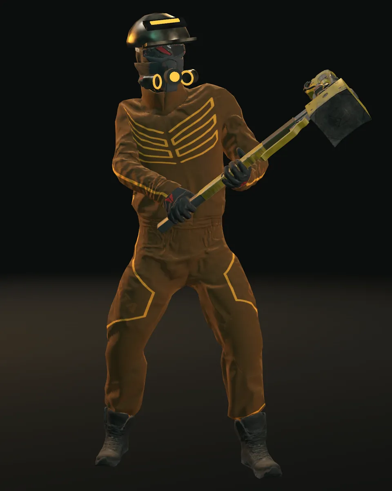
La Forja · Hogar: Ironhaven
FOUNDRY
Vanguardia industrial pesada, hecha para sostener la línea.
Los operadores de La Forja crecieron entre fundiciones y líneas de presión. Llevan la armadura más pesada, pegan más fuerte de cerca y cargan más mineral de vuelta. Son lentos, y no les importa.
RolTanque · cuerpo a cuerpo
Atributos
Perfil de campo
- Vida
- 140
- Aguante
- 80
- Armadura
- 63−39%
- Resistencia
- 16−14%
- Velocidad
- 4,5m/s
- Energía
- 70
- Carga
- 80 kg+2,5/nivel
- Puntería
- 83%
C
Poder de clase
Bastion
Provocás a los enemigos cercanos para que vayan por vos y recibís 30% menos daño durante 4 s. Te movés más lento mientras resistís.
Q
Movilidad
Dash
Te impulsás unos metros en la dirección en la que te movés (o mirás). Todas las clases lo tienen.
P
Pasiva
Momentum
Cada tercer golpe que recibís te refuerza (35% menos daño) y a los aliados a 5 m (20% menos) durante 2 s.
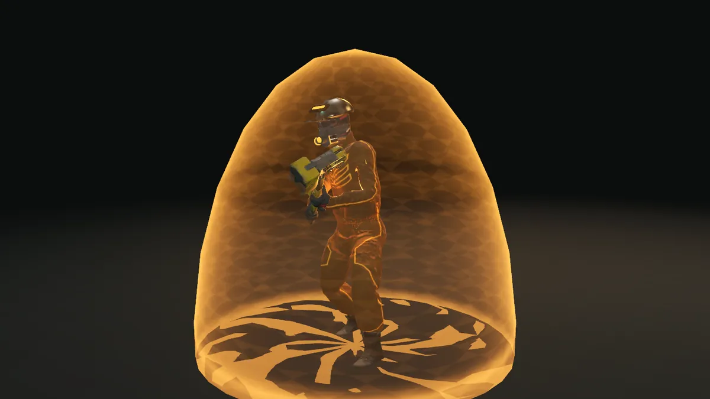
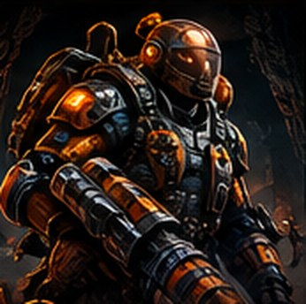
Equipo de cabeza y emblema
Una gorra pesada de soldador con la lente levantada que brilla ámbar y un respirador de doble filtro; parche de yunque y martillo en el hombro.
Arma inicial
Arma inicial · Contundente
Breaker Hammer
Martillos y mazas. Desestabilizar: un golpe retrasa el próximo ataque del enemigo. Aplastar: daño extra contra élites y jefes.
Arma inicial · Hojas
Breaker Axe
Espadas, hachas y motosierras. Calor: los golpes encadenados dentro de 3 s hacen +5 / +10 / +15% de daño (una motosierra en marcha arranca en +15%).
Afinidad de habilidades
- Hojas×1,5
- Contundente×1,5
- Escudos×1,4
- Armas de fuego×0,6
- Hojas cortas×0,5
- Precisión×0,5
- Esporas×0,5
- Vitalismo×0,5
- Tecnología×0,5
Armas iniciales
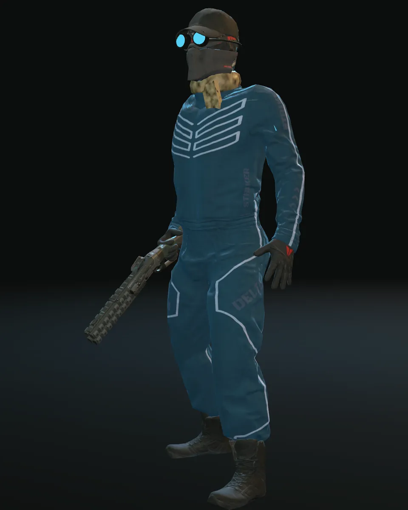
La Deriva · Hogar: Dustline
DRIFT
Explorador subterráneo veloz, hecho para reconocer y elegir blancos.
La Deriva vive en los márgenes del mapa. Son los más rápidos, ven primero y disparan desde donde nada los alcanza. Si los atrapan, hay muy poca armadura entre ellos y la oscuridad.
RolExplorador · a distancia
Atributos
Perfil de campo
- Vida
- 104
- Aguante
- 35
- Armadura
- 6,4−6%
- Resistencia
- 7,5−7%
- Velocidad
- 7m/s
- Energía
- 110
- Carga
- 50 kg+1,5/nivel
- Puntería
- 91%
C
Poder de clase
Long Shot
Tu próximo disparo dentro de 4 s hace ×2,5 de daño con 50% más de alcance.
Q
Movilidad
Dash
Te impulsás unos metros en la dirección en la que te movés (o mirás). Todas las clases lo tienen.
P
Pasiva
Trailblazer
Golpear a un blanco que golpeaste en los últimos 4 s hace +8% de daño.
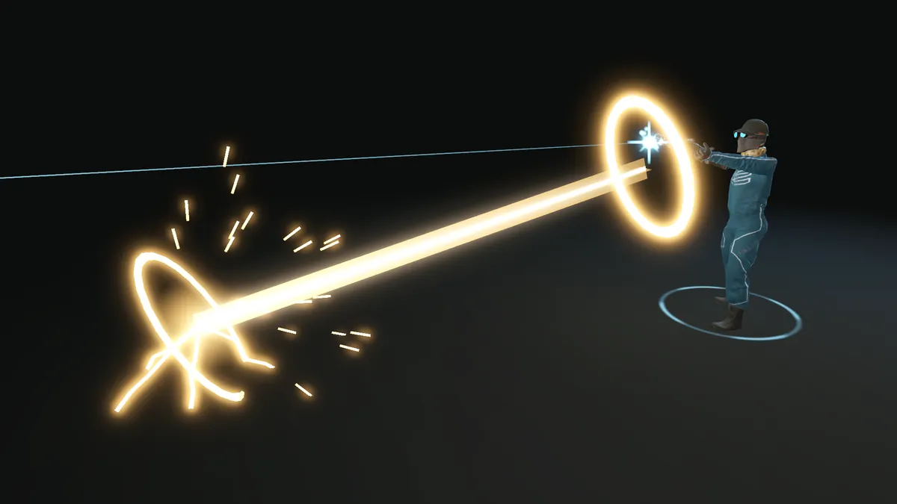
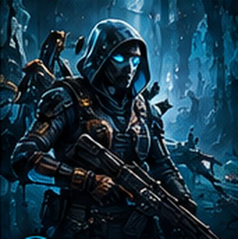
Equipo de cabeza y emblema
Antiparras de expedición con lentes azules sobre la gorra y una bufanda de arena que cae sobre el hombro izquierdo; emblema de galón.
Arma inicial
Arma inicial · Armas de fuego
Frontier Shotgun
Escopetas, carabinas y rifles. Supresión: cada golpe seguido al mismo blanco dentro de 2 s suma +5% de daño, hasta +15%.
Arma inicial · Precisión
Longshot
Rifles de precisión. +15% de daño a blancos a 6 m o más. Más adelante: puntos débiles.
Afinidad de habilidades
- Armas de fuego×1,5
- Precisión×1,5
- Hojas cortas×0,8
- Escudos×0,6
- Hojas×0,5
- Contundente×0,5
- Esporas×0,5
- Vitalismo×0,5
- Tecnología×0,5
Armas iniciales
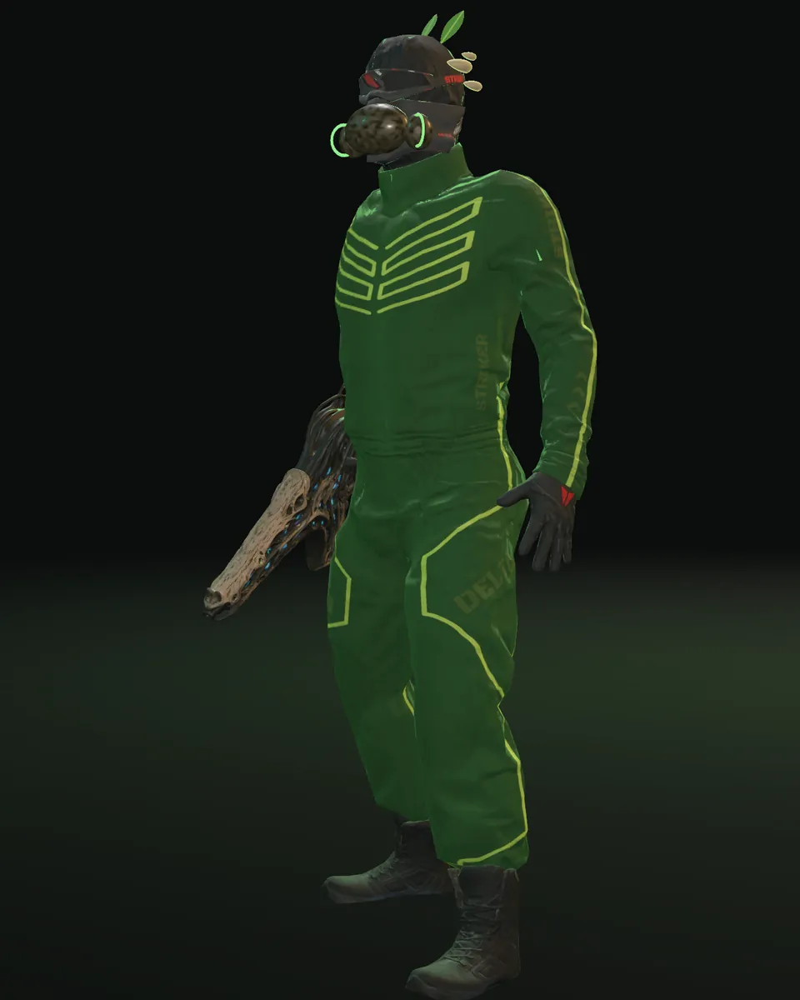
Lo Vivo · Hogar: Verdant Reach
VERDANT
Superviviente biológico que sostiene a sus aliados y domina el espacio.
Los operadores de Lo Vivo aprendieron a convivir con los extraños ecosistemas de abajo. Sus armas se cultivan, no se forjan. Tienen la mayor reserva de energía y las habilidades más fuertes, y mantienen vivos a todos los demás.
RolApoyo · control de área
Atributos
Perfil de campo
- Vida
- 120
- Aguante
- 55
- Armadura
- 22−18%
- Resistencia
- 21,5−18%
- Velocidad
- 5m/s
- Energía
- 150
- Carga
- 60 kg+2/nivel
- Puntería
- 85%
C
Poder de clase
Bloom
Te curás vos y a los aliados cercanos durante 6 s. Con un arma de Esporas en la mano, Bloom envenena a los enemigos cercanos.
Q
Movilidad
Dash
Te impulsás unos metros en la dirección en la que te movés (o mirás). Todas las clases lo tienen.
P
Pasiva
Regrowth
Fuera de combate regenerás 2 de vida cada 2 s.
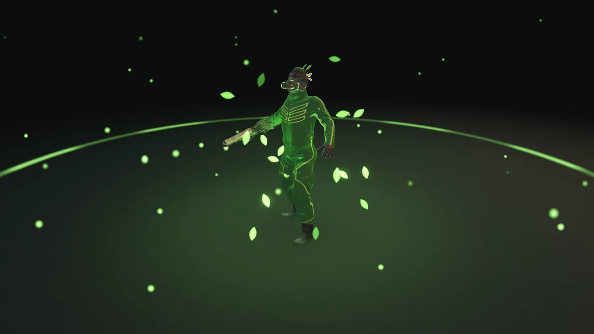
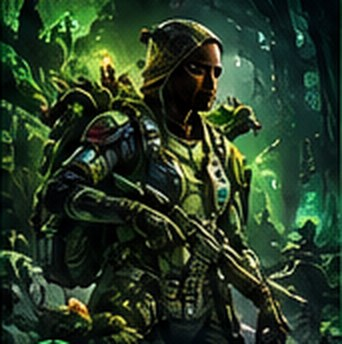
Equipo de cabeza y emblema
Una máscara de filtro orgánica con dos filtros de vaina, hongos en la sien y dos hojas en la coronilla; emblema de hoja.
Arma inicial
Arma inicial · Vitalismo
Synapse Carbine
Armas vivas que disparan dardos sinápticos: hieren enemigos y curan a los operadores que tocan. Más adelante: curación más fuerte.
Arma inicial · Esporas
Spore Projector
Proyectores de esporas. Los cartuchos de esporas envenenan lo que tocan; con uno en la mano, Bloom envenena en vez de curar.
Afinidad de habilidades
- Esporas×1,5
- Vitalismo×1,5
- Escudos×0,8
- Contundente×0,7
- Hojas×0,5
- Hojas cortas×0,5
- Armas de fuego×0,5
- Precisión×0,5
- Tecnología×0,5
Armas iniciales
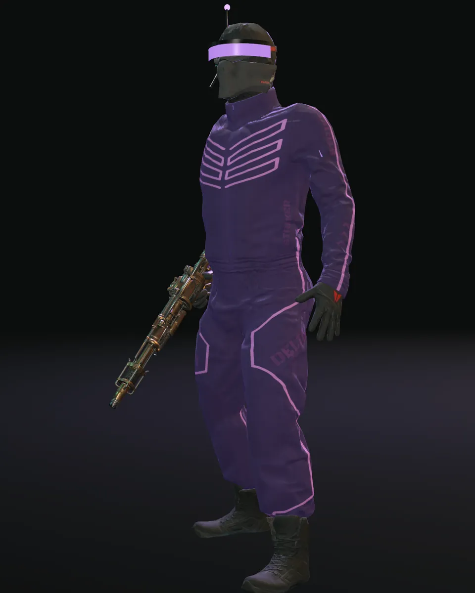
La Red · Hogar: Relay Nine
RELAY
Operador técnico compacto, hecho para desarmar sistemas hostiles.
Los operadores de La Red estudian los restos de la antigua Red. Son frágiles, rápidos y astutos: sus habilidades cuestan lo mínimo, golpean como una trampa y son los primeros en llegar a lo que todavía responde.
RolUtilidad · ráfaga
Atributos
Perfil de campo
- Vida
- 96
- Aguante
- 25
- Armadura
- 3−3%
- Resistencia
- 16,5−14%
- Velocidad
- 6,2m/s
- Energía
- 130
- Carga
- 45 kg+1,5/nivel
- Puntería
- 89%
C
Poder de clase
Overload
Tu próximo golpe dentro de 3 s hace triple daño y tu próximo Dash queda listo al instante.
Q
Movilidad
Dash
Te impulsás unos metros en la dirección en la que te movés (o mirás). Todas las clases lo tienen.
P
Pasiva
Relay
Overload también les da +5 de energía a los aliados a 8 m y les descuenta 2 s del Dash.
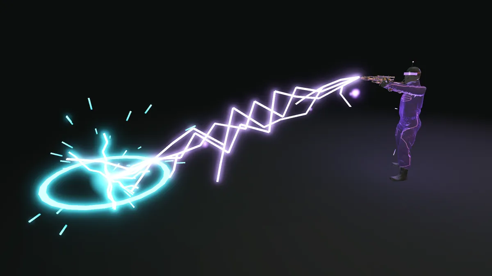
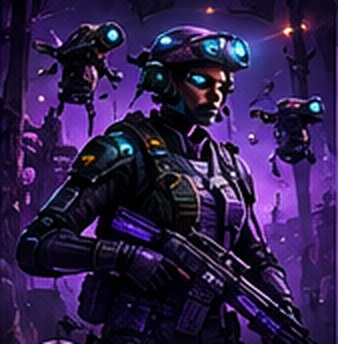
Equipo de cabeza y emblema
Un visor violeta envolvente y un auricular con micrófono y la punta de la antena encendida; emblema de red de tres nodos.
Arma inicial
Arma inicial · Tecnología
Relay Carbine
Armas de energía y electrónica de campo. Cada disparo gasta de la celda equipada. Sobrecarga: +15% de daño mientras la celda está por encima de la mitad.
Arma inicial · Hojas cortas
Relay Knife
Cuchillos y dagas. Emboscada: +30% de daño si te moviste 2 m desde tu último golpe; remates a humanoides heridos.
Afinidad de habilidades
- Hojas cortas×1,5
- Tecnología×1,5
- Armas de fuego×0,8
- Escudos×0,6
- Hojas×0,5
- Contundente×0,5
- Precisión×0,5
- Esporas×0,5
- Vitalismo×0,5